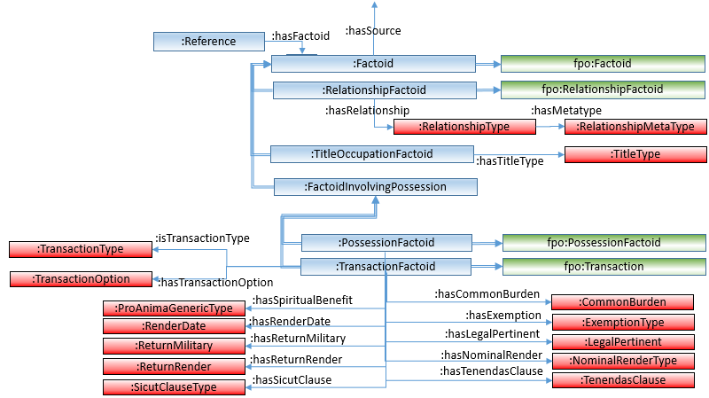

The PoMS Ontology
A basic OWL (https://www.w3.org/OWL/) ontology has been developed which describes the data structure of the PoMS rdf repository. Its URI is:
http://www.poms.ac.uk/rdf/ontology#
In this part of the PoMS rdf documentation we present an overall semantic conception for PoMS’s ontology.
As mentioned elsewhere, PoMS can be classified as a "factoid prosopography" and thus follows the main principles of the factoid prosopography approach described at http://factoid-dighum.kcl.ac.uk/. Thus, PoMS’s ontology draws on important components of the ontology for factoid prosopography (OFP) presented there. See a description of this connection in the Class Hierarchy section, below.
This documentation for the ontology is divided into three parts.
- First, in the section entitled “Overview” there is a very brief description of PoMS's data model, which underpins its ontology.
- Then, in the class hierarchy section, one gets an upper level view of the classes in PoMS’s ontology with information about what the meanings of PoMS’s classes are, and how these classes are linked together through subclassing.
- The next section (entitled "Class Relationships") presents data relationships (what OWL calls “object properties”) that make up the relationships between PoMS's classes.
- In addition, a set of HTML pages have been generated from the owl file that present it in a somewhat more human-readable form. It contains information about all the data in the owl file, thus, not only the “object property” and subclassing characteristics (also described here), but the other properties that are strings and numbers that represent other kinds of data for PoMS’s classes (what owl calls “data properties”) as well. You can find this here.
Overview
PoMS's RDF data is a representation of the structured data model upon which PoMS's database was created, and which in turn is based on the factoid model. Thus, to understand PoMS's ontology, it is useful to first understand the simplified data structure diagram that is shown in the introduction to the OFP ontology at http://factoid-dighum.kcl.ac.uk/ and is shown here:

The central object in the figure is the factoid, and as the text accompanying this figure there says, “A factoid is a spot in a source that says something about a person or persons”, and a little later "the factoid acts as a structural nexus that connects together historical sources, persons (and person assemblages acting as persons), places and possessions, and various kinds of classification schemes (such as personal relationships, titles and offices, etc)." Factoids are assertions made by historical sources about historical people. The ironic character of the name “factoid” is intentional. Historians well understand that rather direct statements of the kinds represented here can sometimes overly simplify a subtle and complex reality.
The structure shown here is simplified in various respects from the one that was actually used in the Factoid Ontology itself and in PoMS. Even so, it represents something important about the structure of PoMS data, and you can see this overarching structure, incorporated into PoMS's ontology, and thus shown in both the ontology's class hierarchy and class relationship diagrams presented below. Furthermore, PoMS’s ontologyshares some of its structure and semantics with the more general Factoid Prosopography. Thus, the PoMS ontology explicitly connects some of its entities to appropriate OFP entities.
PoMS ontology class hierarchy
The figure below presents much of the PoMS Ontology’s SubClass hierarchy as shown in the ontology editing software Protégé. The SubClass idea in Ontologies is to some extent hierarchial, and this figure emphasises this characteristic. However, in the figure, many classes that have subclasses are not “opened”, so that their subclasses are not on display. Bear this in mind while reading the overview below. Furthermore, remember that in an OWL Ontology like PoMS’s any class may appear as a subclass of more than one parent class. Finally, as one would expect from an OWL-based ontology like PoMS’s, all classes are subclasses of owl:Thing.
As we begin our examination of the class structure shown in this figure, it is useful to observe that the class structure shown here can be conveniently broken down into three parts:
- items under :ThingWithID constitute classes that primarily represent the structure of PoMS’s relational database,
- other classes with names starting “:Thing…” represent important substructures of properties that are shared by various classes, and
- classes with prefixed names “ofp:” represent classes that appear in the factoid ontology described at http://factoid-dighum.kcl.ac.uk/, and are here because they are explicitly referenced, and thereby semantically linked to classes in the PoMS ontology.
1. :ThingWithID, and its subclasses
- :ThingWithID : All PoMS classes that directly or indirectly represent data in the PoMS database are subclasses of :ThingWithID. This reflects that fact that all data in the PoMS rdf dataset comes from a relational database, and thus all entities in it define a primary key which is made available in PoMS's RDF through the data property :hasID.
- :AuthorityList: Authority lists have already been mentioned as one kind of “Thing with name”, and represent a list of things that might be thought of as functioning like what in library science is called an Authority File: “A compilation of records that describe the preferred form of headnames for use in a catalog” (https://definedterm.com/authority_file_also_authority_list). In PoMS not only bibliographic objects are formed into authority lists, but other classification schemes as well. :TransactionType, for example, has instances which are the names for the various kinds of transactions that have appeared in PoMS’s charters. PoMS has a rather long list of different authority lists, so they are not shown in this class hierarchary figure. However, they can all be seen in the class relationship diagram described in the next section of this document, and have text defining them attached to the PoMS ontology itself (as rfds:comment), and thus appear in the detailed PoMS ontology documentation pages generated by the OWLdoc tool.
- :Factoid: As described earlier, a factoid is the spot in an historical text where something is asserted about an historical person or persons. It is a key concept of factoid prosopography. In PoMS factoid come in different kinds, and these different kinds are represented as subclasses of :Factoid. :RelationshipFactoid is an assertion about a relationship between two people, :TitleOccupartionFactoid is an assertion that a person had a title, or was involved in an occupation. There are two kinds of factoids that involve possessions. :PossessionFactoid represents a simple assertion that someone owned something, whereas :TransactionFactoid represents a legal transaction between people of a possession. Transactions are the main business of most charters, of course.
- :Person: of course, historical persons are a major class of object in any prosopography. In the factoid model they represent the individuals that are referenced in factoids. Subclassing of :Person is used first to associate a gender with an individual, :HistoricalFemale or :HistoricalMale. Often a group of people form an entity which is referenced in a charter. PoMS distinguishes between an :HistoricalInstitution which is a constituted historical entity, such as an abbey, and the more informal group of people (with both female and male individuals as members) classified as instances of a :HistoricalMixedGenderGroup.
- :Place: Members of this class are geographic places. Geographic places are associated in various way to other classes in PoMS. See the relationship diagram (below) and its discussion for more information.
- :Possession: Since PoMS draws on historical legal charters as its primary historical source, possession play a large role in its data. PoMS uses subclassing to categorise possessions into various types. :PossessionLand, for instance, is a possession of a piece of land; :PossessionOffice is the possession of a particular office.
- :Reference: In the factoid prosopography model a reference connects a factoid to something (in PoMS, either a Person or a Possession). It represents a particular reference to, say, a person in a particular context of one of the factoids drawn from a particular source. Instances of this class have, therefore, a place to record how the reference to that person or possession is actually written in the source, and got s person reference, where needed, what role the person played in the thing represented by the factoid. There are two subclasses: :PersonReference (for a reference to a person), and :PossessionReference (for a reference to a possession).
- :Source: Represents
an historical primary source. In PoMS, this is usually the source from
which charters (sometimes more than one) and Seals/Matrices are drawn.
PoMS has two types of sources which are represented here as subclasses of
:Source:
- :Charter: the principal source for data in PoMS is surviving legal charters. Thus, this class has properties that provide information about each charter. In it one finds properties such as :hasCharterType which identifies which kind of charter it is, or :isChirograph which asserts whether or not the charter is a Chirograph. Several characteristics established for a charter by PoMS are recorded by the property :hasOption which can occur multiple times for a single charter. All charters have identifiers as “Hammond numbers” assigned to them.
- :Matrix: In PoMS a matrix is the mould for a seal – the thing that is pressed against the hot wax in the sealing process. Matrices, therefore, act as sources for historical information in their own right, and properties associated with the :Matrix class describe the characteristics for these matrix objects.
2. :Thing… classes
A number of direct subclasses of owl:Thing have names that start with the word “Thing”. All these subclasses (other than :ThingWithID, which has been described above) are classes that are not directly expressed as relational database tables in their own right, but contain properties that provide certain semantic functions that more than one class/table make use of. The ones that appear in PoMS’s ontology are listed here.
- :ThingOrganisedHierarchically: Any class which has members that can be organised hierarchically are subclasses of this class too, and share properties that support a hierarchical organisation of its instances – so that these instances can be organised as a conceptual tree. In the figure, this class has not been opened to show its subclasses, but if it had been opened one would seem that in PoMS the :Place and :Possession classes are subclasses of ThingOrganisedHierarchically, and therefore has a hierarchical organisation of their members. The properties that express this hierarchy derive from the “Nested Set” approach for representing hierarchies that can be mapped effectively to the relational data paradigm. See https://en.wikipedia.org/wiki/Nested_set_model.
- :ThingWithName: About half of PoMS’s classes are subclasses of :ThingWithName, represent kinds of data that have a string of characters which can be categorised as a “name” for the thing. People of course, have names, so :Person appears as a subclass of vocab:ThingWithName. However, other things in PoMS have names too, and the other major kind of data are different kinds of Authority Lists (such as lists of Offices, lists of Praenomen, etc). :ThingWithName classes all have a data property :hasName – although in the :Person class :hasName is identified as a super-property of PoMS’s person display name identified in property :hasDisplayName.
- :ThingWithNotes: In PoMS textual notes are short texts provided by the PoMS researchers that explain things (like classification decisions made by the PoMS project research team) to the PoMS user community. It is characterised by the :hasNotes property, which is thus shared by subclasses of the :ThingWithNotes superclass: :Factoid, :Place, :PossessionPrivilege, :Source, and two classes that, although not derived directly from PoMS’s relational database, are directly related to the handling of date information: :Weekday and :Season.
- :ThingThatCanBeOrdered: When instances of a class are displayed as a list, some of these lists need to be presented in a specific order: for those lists the ordering provides significant semantic substance. For these, PoMS researchers provided an ordering number in the :hasOrderNo property. Subclasses that have this property are :PersonReference (for the ordering of witness lists in particular), :ProAnimaGenericType, :SicutClauseType.and the two classes that are directly related to the handling of date information :Weekday and :Season.
- :ThingReferencingPlace: Several entity types make explicit reference to geographic place (:Place) through a :hasPlace property. Those entities are, thus, subclasses of :ThingReferencingPlace. They are :Charter, :Factoid, :PossessionPrivilege and ;TitleType. ShouldPossessionPlace be included??
2.a Classes for Dates
Medieval Historians know that dates and dating for materials in their sources are often complex constructs. PoMS’s ontology has two classes that represent materials about dates and dating: :ThingWithPossibleDateRange and :ThingWithDatingInformation.
For both these classes properties are associated them that represent assertions about dating. These properties will be discussed shortly. These two properties act as superclasses for classes that contain dating information that is represented by these properties.
:ThingWithPossibleDateRange. This class is very straightforward, and has only a single property associated with it: :hasPossibleDateRange, which is a string that represents, in human readable form, a date range. Its subclasses (those classes that, therefore, make us of this property) are :Factoid, :Person and :Source.
:ThingWithDatingInformation is more complex, and has :Factoid and :Source as its subclasses. Thus, instances of these two classes can express dating information about themselves using the set of properties that :ThingWithDatingInformation provides.
- Dating information is represented as a date range, specified in terms of a starting and ending date. The date can be specified to different degrees of specificity: sometimes only a year can be given, sometimes a year, month and day is possible. If there is no range needed, only the starting date (“from date”) is specified.
- The two dates that specify the range are called the “from date” (starting date of the range) and “to date” (ending date).
- For the from date, several properties are provided:
- :hasFromDay, :hasFromMonth and :hasFromYear specifies the day, month of year for the from date
- :hasFromWeekday is specified if the source explicitly gives a weekday. This is expressed in the RDF as a member of the :Weekday class, such as :Sunday.
- :hasFromSeason is specified if the source explicitly gives a season. This is expressed as a member of the :Season class, such as :Spring.
- :hasFromModifier and :hasFromModifier2 are used to provide two bits of “modifier text” for the date. In PoMS, only “cir” (for “circa”) has been used in :hasFromModifier, and “lat” (for “late) or “ear” (for “early”), as in “late 1161” or “early 1302”.
- Here are a set of properties for the “to date” that provide the same information as the corresponding properties listed above for the “from date They have, not surprisingly, the word “to” in each name replacing “from”; :hasToday, :hasToMonth, and so on.
- :hasDatingNotes: generally, a short bit of text that justifies the dating specified here, e.g.: “Death of King David I × last year in which Walter de Bidun could have been chancellor.”
- :hasFirmDate: a representation of the date in text as a “firm date”, e.g. “24 May 1153 X 8 April 1156”.
- :hasFirmDayOnly: indicates the thing has a weekday but no date
- :hasProbableDate: text that describes a probable date, e.g. “prob. shortly after 24/May/1153”.
- :isEitherOr: indicates two possible dates or date ranges
- :isFirmDate: indicates the date is a firm date
- :isUndated: indicates the document is undated or undateable
Other relational database classes that contain dating information are specified in the PoMS ontology as being subclasses of these two “Thing” classes.
You will have noted that not all the classes in the hierarchical class figure are described above. Furthermore, only a very limited number of associated properties are mentioned in this text. A more detailed semantic description for classes and properties is given in the detailed formal description of the ontology generated by OWLDoc and found here.
Ontology Class Relationship Diagram
The following figure presents all the Classes in PoMS’s ontology and shows how they relate to each other through owl:ObjectProperties.
When studying this figure, you should first note that it is meant to be a broad overview of the classes, and leaves out many details. For example, no owl:DataProperties are shown in the diagram, and the SubClassing hierarchy is not fully shown either. Nonetheless, a broad overview is helpful if you are trying to grasp the structure overall.
First, about the legend (bottom left corner). As it tells you:
- the double-line arrows show SubClass->SuperClass connections between classes, with the arrow head placed at the SuperClass end of each connection.
- the single line arrows show connections between Classes defined by owl:ObjectProperties. The name of the property is shown on each line, and the arrow head end is the “range” part of the relationship.
- the boxes represent Classes, and three colours are in use:
- The green boxes represent classes from the OFP ontology (see http://factoid-dighum.kcl.ac.uk/). By connecting some of PoMS’s classes with classes in the OFP, we intend to show how the PoMS data works as a factoid prosopography.
- The red boxes represent classes that are authority lists. As described above, authority list items are primarily lists of names for things that belong in the list.
- The blue boxes represent the major semantic classes in the PoMS ontology, which in turn represent the major semantic elements in the PoMS database data structure.
A Guided Tour
The class relationship diagram just provided shows the classes in the PoMS ontology as coloured boxes (representing PoMS’s data Classes) with two types of arrows connecting them. In this section, we will focus on the significance of the single line, named, arrows, which present Class connections expressed by the owl:ObjectProperty mechanism. The reader may have noted the “:” before class names in this diagram. This implies the base URI prefix for PoMS’s ontology that applies to all the items in the diagram: http://www.poms.ac.uk/rdf/ontology#
In the ontology itself, this URI is given the prefix “vocab:”, although in the following discussion the vocab: prefix is left out purely for the sake of compactness.
Persons
PoMS’s data is largely modelled as a prosopographical project, so an important class is :Person, shown at the top left side of the diagram. PoMS Persons have a rich set of owl:DataProperties, listed in the section about :Person in the OWLDoc pages in http://www.poms.ac.uk/rdf/ontology/doc, but not shown here. However, one can see in this diagram that :Person also connects to several other data classes. Here is a reproduction of the top left corner of the relationship diagram above which focuses on the classes directly related to Persons:
There are several things to note here:
- First, PoMS’s :Person class is a subclass of FPO’s Person class. This tells us that one of the direct connections between PoMS and the FPO is through its person class.
- Shown above the :Person class is a collection of six classes that represent types of “persons” in PoMS, represented as subclasses of the more general :Person class. In the PoMS data almost all people are asserted to be members of one of these classes, rather than :Person directly.
- There
are four kinds of OWL Data Properties that are associated with :Person, and
they are:
- :hasFloruitLow and :hasFloruitHi, which together provide a general life date range for the person,
- :hasMedievalGaelicForename, which specifies the historic Gaelic forename for the person, as specified in the :MedievalGaelicForename authority list, and
- :hasModernGaelicForename, which specifies that one of the names in :ModernGaelicForename is the modern-day representation of this person’s name.
For example, one of the triples one can find in the data set is:
<http://www.poms.ac.uk/rdf/entity/Person/10>
:hasModernGaelicForename
<http://www.poms.ac.uk/rdf/entity/ModernGaelicforename/38>
Where …./Person/10 is the URI for a particular person, in this case Reginald, bishop of Ross (d.1213), and …/ModernGaelicforename/38 is the authority list entry for Raghnall.
Factoids
Since PoMS is a factoid prosopography, it is perhaps not surprising that most of the assertions about persons in PoMS appear in the form of factoids. The bottom right side of the relationship diagram focuses on classes related to factoids:

One can find the :Factoid class in the top, centre, of this diagram. Factoids say things about people, and the :Reference class provides the linking mechanism between factoids and persons. :Reference is described below (and as one will see there, in PoMS :Reference also provides links to possessions).
There are several subclasses of :Factoid that reflect the different kinds of factoids that PoMS holds:
- :RelationshipFactoid asserts personal relationships that the sources identify between two people (e.g. William Boswell is husband of Isabel of Merlington). This is essentially the same as FPO’s fpo:RelationshipFactoid. The particular relationship being asserted is provided through the :hasRelationship property, which connects to the :RelationshipType authority list. Relationships in :RelationshipType have been given a classification by PoMS, and this is in :RelationshipMetaType.
- :TitleOccupationFactoid asserts title and occupations that the sources have associated with their historical persons. Titles are listed in the :TitleType authority list and are linked to a particular factoid through its :hasTitleType property.
- :FactoidInvolvingPossession: Possessions are
prominent (see discussions about them below) in PoMS, and this is not
surprising given that the historical sources for PoMS are primarily legal
charters and charter-like documents. Possessions are not only physical
objects, but rights and privileges of various kinds. There are two ways in
which possessions are mentioned in these charters:
- :TransactionFactoid: In this kind of factoid possessions are mentioned as part of a legal transaction. Legal transactions are the mainstay of PoMS’s sources, so the structure for the :TransactionFactoid is rich, with many properties involved. You can see this in the number of authority lists associated with the :TransactionFactoid class, and, (although they are not shown on this diagram) there are many data properties also.
- :PossessionFactoid: Sometimes a possession is mentioned (in passing, as it were) in a charter without being involved in a transaction. These references are captured in :PossessionFactoids.
References
The factoid has been defined as “a spot in a source where something is said about a person or persons”. Within the idea of a factoid, then, is the idea of a direct reference to a person in the text, and this idea is what is represented by :Reference. Here is the portion of the relationship diagram that represents it:

:Reference is an idea that is present in FPO as well, so PoMS’s :Reference class is asserted to be a subclass of FPO’s :Reference class (see discussion about Reference from FPO’s point of view here). As in FPO, a property links a :Reference to a :Factoid. In PoMS the link is expressed through property :hasFactoid, and the link can be thought of as asserting a kind of ownership: a factoid can be considered to own one or more references. Note that PoMS’s :hasFactoid is an inverse relation to FPO’s property link fpo:hasReference.
A reference arises out of a particular spot in a text where a name of someone is recorded, so :hasOriginalText is the property for :Reference that allows PoMS to record how the name was recorded there. The PoMS team did not record this for every reference, instead it was used primarily to record ones that were unusual, unclear, or perhaps controversial. PoMS’s :hasOriginalText property is a subproperty of FPO’s fpo:hasNameInSourceAs.
In PoMS the idea of Reference as it is represented in FPO is expanded to include not only references to historical persons, but references to possessions too. Thus, there are two subclasses to :Reference:
- :PersonReference asserts the connection between the factoid and a person represented as :Person. This is done with its property :referencesPerson, which is a subproperty of FPO’s fpo:reference. Note that factoids often refer to more than one person, and if so, each person is likely to have a particular role in what the factoid represents. Thus, there is a property :hasRole for :PersonReference that asserts the particular role for this person in this factoid, by pointing at one of the roles in the authority list :Role.
- :PossessionReference asserts the connection between the factoid and a possession represented as :Possession. This is done through its property :referencesPossession.
Sources
Historical primary sources are the objects of research in a factoid prosopography project such as PoMS. They appear in the class relationship diagram in the upper right corner:
The PoMS ontology :Source class is a subclass of FPO’s fpo:Source class.
As shown in the Class Hierarchy discussion earlier, PoMS has two kinds of sources. The overwhelmingly most prominent kind of source is the legal charters (represented through the :Charter subclass), but the seal matrices also provide an historical source as well (:Matrix subclass).
- A :Source is written in a language, and its :hasLanguage property will link to the :Language authority list.
- PoMS also classifies sources according to a grantor category, and this is specified by the :hasGrantorCategory property.
Both :Matrix and :Charter have a number of data properties to allow information about them to be recorded, and these are not shown here. Of these, of particular interest is the Hammond Number classification scheme for charters :hasHammondNumber and other properties with names beginning “hasHammond…”.
:Matrix instances can record the matrix shape through the :hasShape property.
A :Charter instance is assigned a charter type, which is recorded with the :hasCharterType property. Each instance may have one or more optional characteristic connected to it, which is recorded through one or more instances of the :hasCharterOption property.
Possessions
Possessions are prominent in PoMS due to its orientation towards legal charters. The structure associated with them is rather straightforward:
Possessions are associated with the legal charter sources through their references in Factoids, and that is shown in the right side of this diagram. The :PossessionReference class is a subclass of :Reference, and uses :referencesPossession property to point to a particular :Possession.
Any particular possession, in turn, is associated with one of the subclasses of :Possession, which group possessions into 9 categories, ranging from unfree persons, to privileges (such as the right to hold a fair), and to land, plus several others (as shown).
Places
Geographical places are recorded in PoMS, and are all associated with a particular area of land. :Place is associated with a range of different classes of objects:

Several things to note about :Place:
- Place is an authority list in its own right.
- Although not evident here, Place allows its items to be organised hierarchically, so that one place can be indicated to be inside another (Glasgow Cathedral is inside Glasgow, for example)
- :Place is referenced from many other classes through the :hasPlace property. Classes with the :hasPlace property are also members of the :ThingReferencingPlace class.
- Many places have an associated geographic point, expressed as Longitude and Latitude in
two ways: (i) through the :hasGeographicLongitude and :hasGeographicLatitude
properties, and (ii) through the :hasGeoData property, which gives the location
of the point using wktLiteral notation, e.g. “
POINT(55.953 -3.189)”. Even for places which might be thought of as better represented as an area rather than a point (e.g. cities, or counties), PoMS has only a point coordinate. - The wktLiteral string ssoiated with the :hasGeoData property is given
the datatype of
geo:wktLiteral, and so is available to be used as data in queries involving rdf4j’s implementation of GeoSPARQL. (About GeoSPARQL in rdf4j see pages at GitHub and rdfj4 itself).